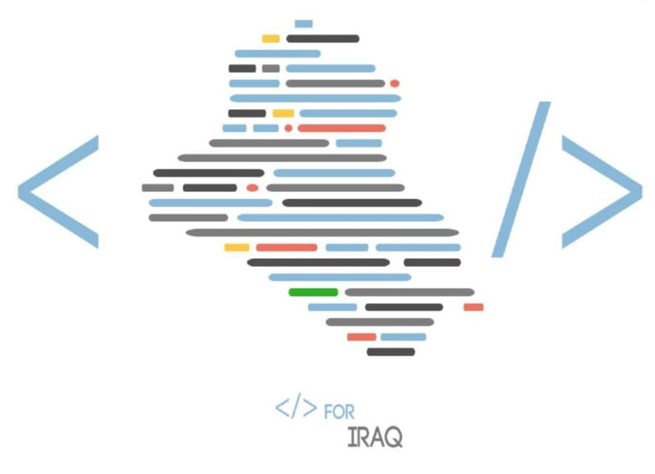

وهي مبادرة إنسانية غير ربحية تهدف الى خدمة المجتمع عن طريق البرمجة تعتبر هذه المبادرة مبادرة تعليمية حقيقية ترعى المهتمين بتعلم تصميم وبرمجة تطبيقات الهاتف الجوال ومواقع الانترنت وبرامج الحاسوب والشبكات والاتصالات ونظم تشغيل الحاسوب باستخدام التقنيات مفتوحة المصدر ، كما توفر لهم جميع الدروس التعليمية اللازمة وبشكل مجاني تماماً بل الاهم من ذلك تعتمد على مبدأ المواطنة والمشاركة الفاعلة في تأسيس وبناء المجتمع تدعو هذه المبادرة جميع الطلبة والخريجين والهواة والأساتذة الجامعيين والمهتمين مجال البرمجة وتقنيات المعلومات وكذلك الاختصاصات الاخرى الى التطوع والمشاركة الفعلية لأجل الارتقاء بواقع البلد ، حيث تعتبر فرصة عظيمة لاكتساب الخبرة والمهارة عن طريق تصميم وتنفيذ برامج وتطبيقات خدمية من شأنها خدمة المواطن وذلك ضمن مجاميع عمل نشطة وفعّالة يتعاون فيها جميع الأفراد كفريق واحد يتبادل الاراء والخبرات ويطرح الافكار لتتم مناقشتها وتطبيقها على أرض الواقع ، كما تفتح المجال لجميع المواطنين العراقيين ومن جميع الاختصاصات إلى المشاركة الفاعلة في هذه المشاريع لرفد الفريق بالخبرات والافكار والاراء والمقترحات التي من شأنها خدمة المجتمع بأفضل ما يمكن.